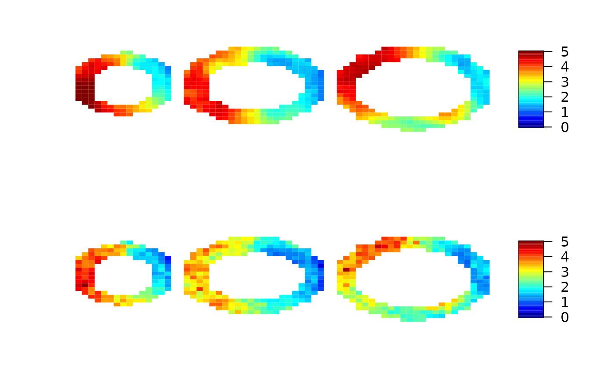
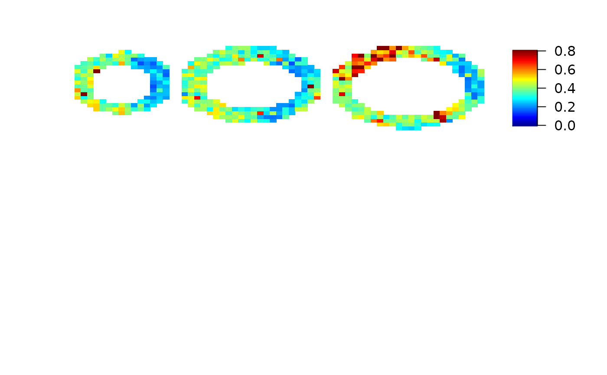

Spline analysis of cardiovascular magnetic resonance imaging
cmr.local(data, mask, input, quantiles = c(0.25, 0.75), cores = 1)3d array of CMR signal
2d array of mask. Voxel with 0 or FALSE will be omitted from analysis
input function
quantiles used for credible interval, default: c(0.25, 0.75)
number of cores to use in parallel computing
list of mbf (point estimation) and ci (credible interval)
# \donttest{
oldpar <- par(no.readonly = TRUE)
library(cmR)
data(cmrsim)
local.mbf=local.ci=array(NA,c(30,30,3))
for (i in 1:3){
mask=array(NA,c(30,30))
mask[cmrdata_sim[,,i,1]!=0]=1
temp=cmr.local(cmrdata_sim[,,i,], mask, input_sim, cores=2)
local.mbf[,,i]=t(as.matrix(temp$mbf))
local.ci[,,i]=t(as.matrix(temp$ci))
}
par(mfrow=c(2,1))
imageMBF(maxresp_sim, zlim=c(0,5))
imageMBF(local.mbf, zlim=c(0,5))

imageMBF(local.ci, zlim=c(0,0.8))
par(oldpar)

# }